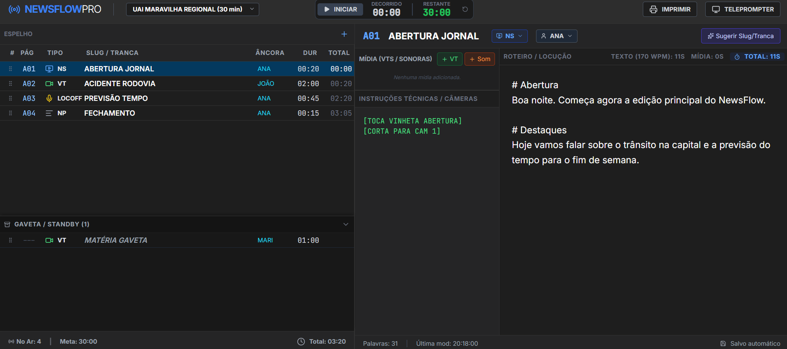
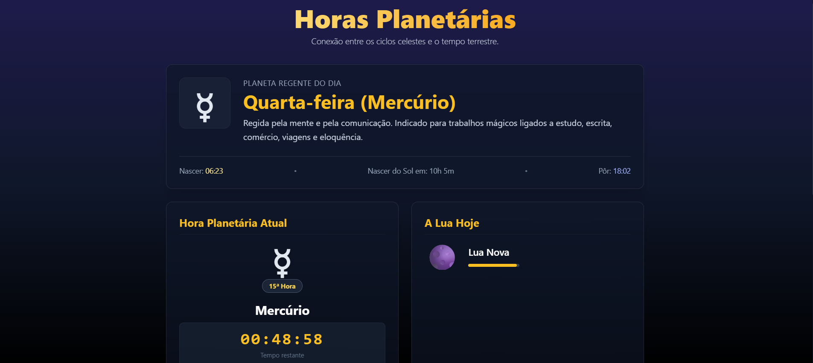
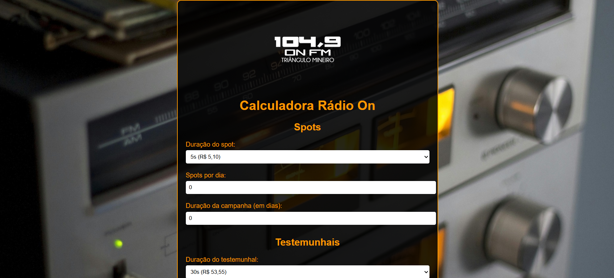
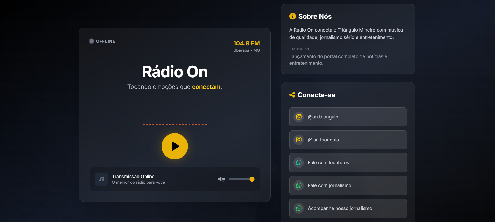

Links pessoais
Esta página concentra perfis, publicações e trabalhos que ajudam a entender a trajetória de Rafael Ferreira entre comunicação, tecnologia e portfólio de desenvolvimento web.
- Kerubaspxl - Projeto pessoal de pixel art
- Promptmancer - Geração de animes por IA
Se quiser conhecer a formação técnica por trás desses trabalhos, veja também as certificações e a apresentação completa na página inicial.
Playlist YouTube Exemplo de reportagens feitas ao longo da carreira como jornalista
Projetos de Programação
Os projetos abaixo representam aplicações reais e estudos práticos alinhados ao objetivo de atuação como desenvolvedor web júnior, com foco em experiências úteis, funcionais e publicadas online.
Para conversar sobre projetos, oportunidades ou parcerias, acesse a página de contato.
-

Newsflow Pro - NewsFlow Pro é uma SPA de planejamento editorial para emissoras, criada com React 19, Tailwind CSS e integração opcional com Google GenAI. O produto organiza roteiros de jornal, tempos de mídia e controle de ordem editorial, oferecendo teleprompter em nova janela e preview de impressão. O diferencial técnico está no fluxo de produção completo em browser — com drag-and-drop, cronômetro “No Ar” e geração inteligente de slug jornalístico. -

Sistema de Horas Planetárias - Ferramenta web que calcula horas planetárias com base na localização do usuário, integrando dados astronômicos reais para exibir planeta regente do dia, hora planetária atual, fase da Lua e horários solares. Desenvolvido com HTML, CSS, JavaScript vanilla, SunCalc e APIs externas de clima e geolocalização. O diferencial técnico está na combinação entre lógica temporal dinâmica, atualização em tempo real e personalização da experiência conforme contexto geográfico. -

Calculadora de Apoio Comercial - Calculadora Rádio On é uma ferramenta web simples para estimar investimentos em campanhas de rádio, calculando custo de spots e testemunhais por duração, frequência e desconto. Construída com HTML, CSS e JavaScript puro, oferece uma interface direta de formulário e cálculo instantâneo sem dependências externas. -

Rádio On - Rádio On Triângulo é uma landing page SPA construída com React 19 e Tailwind CSS para transmitir ao vivo a programação da rádio 104,9 FM. Resolve a experiência digital do ouvinte com player streaming em tempo real, controle de volume e conexões diretas para Instagram e WhatsApp. O diferencial técnico é o player HTML5 gerenciado por hooks React, integrado em uma UI leve implantada via Netlify. -
Ogawa Ryu - Ogawa Ryu é uma landing page SPA desenvolvida com React, Vite, TypeScript e Tailwind CSS via CDN para promover uma escola de Kenjutsu. Resolve a necessidade de apresentação moderna e captação de alunos, com navegação ancorada, menu mobile e CTA direto para WhatsApp. Diferencial técnico: estrutura de componentes React, animações de scroll e FAQ interativo em uma página responsiva.